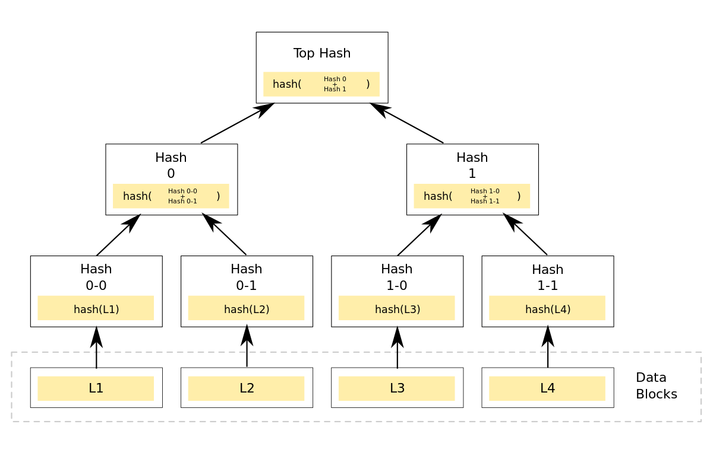
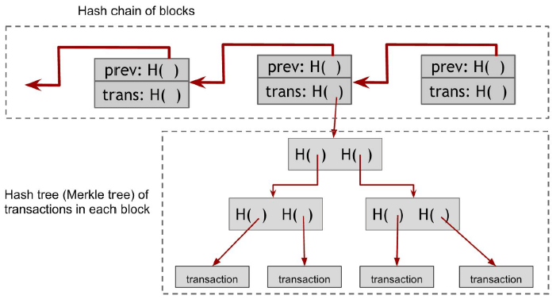

exemplo
exemplo 2
INTRODUÇÃO
A tecnologia blockchain, cujos criadores (ou criador) permanecem desconhecidos por trás do pseudônimo Satoshi Nakamoto, apareceu pela primeira vez em 2008.
Inicialmente desenvolvida para ser o alicerce da moeda digital Bitcoin, essa tecnologia, que pode ser vista como um modelo descentralizado de processamento e registro de transações, despertou o interesse de toda uma comunidade científica, por conta de suas variadas aplicações.
Este trabalho tem como objetivo esclarecer ao leitor como funciona a lógica e a arquitetura da uma blockchain, e porque esta tecnologia está potencialmente relacionada com o futuro.
O que é, afinal, uma blockchain?
Antes de explicarmos de forma técnica como funciona uma BlockChain, é interessante que o leitor se familiarize com a sua lógica. Uma analogia muito interessante, feita por engenheiros do Google, diz o seguinte: “Imagine uma planilha que foi replicada milhares de vezes em uma enorme rede de computadores. Agora imagine que essa rede funciona de forma a atualizar a planilha em intervalos de tempo regulares. Isso, basicamente, é blockchain.”
Essa analogia deixa evidente uma das principais características de uma rede blockchain: Controle público e descentralizado. Por ter cópias exatamente iguais espalhadas entre todos os envolvidos na rede, não existe uma autoridade central responsável pelo controle dos registros.
Outra importante característica da blockchain é a imutabilidade dos dados. Ainda aproveitando a analogia das planilhas, isso quer dizer que uma vez que registros foram inseridos na planilha compartilhada por todos da rede, estes não podem ser alterados ou removidos.
Após cada atualização, um novo “bloco” de registros é inserido, contendo todas as modificações que a rede sofreu nesse último intervalo. Na seção abaixo, aprofundaremos um pouco mais na arquitetura desses blocos de registros.
Arquitetura de blocos
Como diz o próprio nome da tecnologia, a estrutura base de uma blockchain (cadeia de blocos) são blocos ordenados. Esses blocos possuem identificadores únicos, e armazenam informações relativas à transações que ocorreram em dado intervalo. Além do identificador único, os blocos também possuem uma parte destinada a armazenar o identificador do bloco anterior, e uma parte destinada armazenar os dados das transações (em uma blockchain destinada a criptomoedas, esses dados comumente são: carteira remetente, carteira de destino, valor transferido, etc).
A imagem abaixo, retirada do artigo “Desmistificando BlockChain: Conceitos e Aplicações”, mostra os blocos da forma como foram descritos acima.
Conceitos fundamentais
Para o entendimento do funcionamento dessa cadeia de blocos, serão esclarecidos primeiramente, alguns conceitos básicos utilizados na dinâmica desse serviço.
Função Hash
Como dito na seção anterior, cada bloco um possui um identificador único e um espaço destinado a armazenar o identificador do bloco anterior. Esses identificadores são chamados de hashes. A função hash pode ser definida como um algoritmo que mapeia dados de comprimento variável para dados alfanuméricos de tamanho fixo. É muito utilizada para buscar elementos em base de dados, verificar a integridade de arquivos baixados ou armazenar e transmitir senhas de usuários.
No caso da blockchain, é desenvolvido um código hash para cada bloco de informação armazenado. De forma que cada bloco faça referência ao anterior através dessa chave e, assim, seja formada uma cadeia de blocos interligados. Portanto, se alguma informação é modificada, o código hash será também alterado e provocará disruptura da então formada, cadeia.
A geração do código hash para a tecnologia blockchain não é feito de maneira arbitrária, é necessário que comecem com uma quantidade específica de zeros. Essa especificação, torna a geração de um código válido mais difícil, diminuindo a possibilidade de que seja gerado um outro código igual a esse.
Chaves Assimétricas
Este é um dos conceitos fundamentais da criptografia moderna. Seu funcionamento é bem simples, o algoritmo gera um par de chaves, uma pública e uma privada. Sendo esta última guardada em segredo pelo seu dono.
O objetivo é o algoritmo gerar as chaves de maneira que, caso se use a chave pública para encriptar uma mensagem,
apenas o possuidor da chave privada será capaz de desencripta-la. Este é um excelente método para garantir a segurança em um
canal público, uma vez que apenas a chave pública é compartilhada entre o emissor e o receptor.

Figura 3.1 - Exemplificação do tráfego de informação utilizando chaves assimétricas
Árvore de Merkle
Dada uma grande quantidade de informações, a árvore de Merkle é uma estrutura que permite a verificação da presença de uma certa informação em um determinado local de maneira simples.
Inicialmente, essa grande quantidade de informações será quebrada em blocos, mantendo-os em ordem, aplica-se uma função de hash a cada um. O próximo passo então, seguindo a ordem original, consiste em concatenar esses hashes dois a dois (três a três dependendo da configuração) e aplicar a função hash a esta concatenação. Teremos então, o nó de uma árvore e os hashes que originam seus filhos. Este procedimento é repetido com todas as partes e depois com os nós gerados pelas partes, sucessivamente, até que se obtenha o nó raiz. Ou seja, é uma árvore construída de baixo para cima.
O motivo principal da utilização desta configuração é que ela permite a utilização da prova de Merkle. Caso um cliente queira verificar uma certa informação que se encontra em uma determinada posição da árvore. Basta que o cliente possua o hash da raiz fornecido por alguma fonte confiável e a parte que está sendo investigada precisará enviar apenas os hashes complementares ao longo do ramo que leva da folha até a raiz.
Na figura abaixo, por exemplo, conseguiríamos provar que o Hash 0-1 está neste lugar sabendo os hash 0-0, 1-0 e 1-1.

Figura 3.2 - Exemplificação da Árvore de Merkle
Mineradores
O blockchain é armazenado de maneira íntegra nos computadores de mineradores, estes são responsáveis por manter e atualizar a base de dados. Como todos possuem as mesmas informações, não é possível que um minerador cometa alguma fraude no sistema.
O trabalho do minerador, portanto, é a geração da chave hash com as especificações indicadas e a manutenção dos dados em seu computador.
Para produzir o código alfanumérico é realizado uma espécie de jogo. Os mineradores recebem um bloco de informações e há uma competição entre eles para gerar um código compatível com as especificações em um prazo de dez minutos. Uma vez gerada, os outros devem validar o hash e assim, o produtor ganha uma bonificação em bitcoin e coloca um novo bloco de informação na base de dados.
Por que a blockchain é considerada tão segura?
Como já foi apresentado anteriormente, a estrutura do blockchain é composta por dois tipos básicos de registros: blocos e transações. Essa estrutura é iniciada com um bloco que registra o estado inicial do banco de dados, seguido por blocos subsequentes, cada qual contém um grupo de transações já validadas pelos mineradores. Cada um desses blocos subsequentes possui um hash do bloco anterior, o que cria um encadeamento entre eles, garantindo a integridade da informação, uma vez que, só se torna possível alterar a informação de um bloco, alterando todos os blocos subsequentes.
Os nós são criados através de um processo conhecido como mineração, cada nó pega uma certa quantidade de informações já validadas e as inclui no bloco. Para cada um é criado, então, o cabeçalho em que é armazenado principalmente o hash do bloco anterior e uma marca de tempo indicando quando foi criado. Uma vez concluído, o seu próprio hash é obtido e armazenado para identificá-lo.
As transações são organizadas em uma Árvore de Merkle dentro do bloco, na qual, a raíz é armazenada no cabeçalho de cada bloco. A construção dessa árvore facilita a busca de uma transação armazenada através da prova de Merkle, já explicada anteriormente nos conceitos fundamentais. Essa estrutura está ilustrada na imagem a seguir retirada do artigo Blockchain com Árvore Binária de Merkle - Narayanan et al. 2016.

Figura 3.3 - Exemplificação da Estrutura de uma blockchain
Proof of Work
Para evitar que ataques ao sistema aconteçam neste processo, faz-se necessário que exista um incentivo para que os mineradores sejam “bem intencionados”. O mais comum, utilizado principalmente pelo Bitcoin e pela Ethereum que será explicado mais adiante, é a Prova de Trabalho (Proof of Work) . Tal mecanismo tem como principal objetivo garantir que o criador do bloco dedicou uma certa quantidade de recursos e tempo enquanto criava o bloco. De modo que seja, economicamente, desvantajoso criar uma cadeia de blocos falsa.
Dessa forma, já que os mineradores competem entre si para a criação de um bloco válido e são consequentemente remunerados. Foram criadas, para dificultar esse processo, condições pré estabelecidas para a criação do código hash, como por exemplo, o número de zeros que deve iniciar o código. Como não é possível prever qual código será gerado pelo computador, faz-se necessário que o trabalho seja repetido diversas vezes a fim de conseguir um código válido.
Validação de um bloco
A validação de um novo bloco segue um procedimento simples:
1) Verifica-se se o bloco anterior existe e é válido.
2) Verifica-se a marca temporal do novo bloco, que deve ser maior que a do bloco anterior e não pode estar muito distante do futuro.
3) Verifica-se quaisquer informações adicionais que cada blockchain específico coloca em seu cabeçalho.
4) Verifica-se o consenso do novo bloco. Ou seja, dado o estado atual do banco de dados calculado até o bloco anterior. Aplicam-se, em ordem, todas as transações registradas no novo bloco a este estado, obtendo uma variedade de estados intermediários. Se alguma transação resultar em um estado intermediário inválido, a verificação falhou. Caso contrário, a validação é feita e um novo bloco é adicionado ao final da cadeia.
Dado que a rede é distribuída, pode acontecer de dois ou mais blocos legítimos serem criados concomitantemente e adicionados á mesma posição. Isso cria denominado “fork” temporário do banco de dados, no qual duas ou mais versões competem para serem aceitas. Esses critérios de desempate são definidos de acordo com cada rede.
Aplicações
Ethereum
Ethereum é um dos maiores projetos relacionados a criptomoedas da atualidade, ela é uma plataforma para criação de smart contracts usando blockchains. Nela é possível criar smart contracts usando uma linguagem de programação na plataforma ethereum, chamada solidity.
As transações feitas na plataforma da Ethereum são feitas através da sua criptomoeda, o ether, que serve para financiar novos projetos criados na plataforma. a Ethereum permite que a tecnologia blockchain possa ser usada na criação de vários projetos, através da programação, como casas de apostas, sistemas de crowdfunding e redes sociais.
Smart Contracts
Smart contracts são contratos digitais feitos entre duas entidades, umas das vantagens dele ser digital é que não pode ser perdido ou adulterado e é auto-executável.
São usadas Blockchains para criar tais contratos, pois elas garantem eficiência e segurança computacional para os contratos. Na prática, os smart contracts são algoritmos e regras implementadas usando blockchains.
Com a criação de smart contracts alguns problemas vieram com ela, como por exemplo, o fato de que não podem guardam muita informação, podem guardar apenas 40 bytes de metadados por transação, o que para algumas aplicações pode ser pouco, como por exemplo stream de vídeo.
DAO(Decentralized Autonomous Organizations)
São organizações autônomas que aplicam seus estatutos utilizando blockchains, mais especificamente smart contracts, com a implantação desses smart contracts para o gerenciamento de organizações, a tendência é que haja mais descentralização, e versatilidade na gestão dessas organizações.
As DAOs devem possuir um token para transação, que é responsável por avaliar e recompensar certas atitudes, e pelas DAOs não possuírem estruturas hierárquicas, essas recompensas vêm direto da empresa.
Depois de criada, a organização independe de seus criadores, o que dá independência para a organização e faz com que ela seja gerida apenas pelas blockchains, sem influência externa.
Além de quebrar o paradigma atual hierárquico de grandes empresas, as DAOs podem ser uma maneira de implementar a gestão de uma empresa com a confiabilidade da blockchain e com um preço por transação muito pequeno, o que poderia revolucionar a maneira de fazer gestão de organizações drasticamente.
Conclusão
Com a evolução da era digital, a busca por automatização dos serviços tornou-se constante. Alguns desses serviços, entretanto, necessitam de mais segurança para que possam transmitir confiabilidade para o usuário, assim como, prevenir de possíveis ataques e perda de informação.
O blockchain, portanto vem apresentando soluções para esses problemas. A possibilidade de realizar transações automatizadas de maneira segura entre partes que não confiam entre si mutuamente é valiosíssima.
As perspectivas no uso dessa tecnologia em diversas áreas é bem alto. Uma vez que com a implementação dessa tecnologia, grandes avanços poderão ser notados nas diversas transações que hoje são realizadas com a necessidade de um mediador.
Referências Bibliográficas
- Desmistificando BlockChain: Conceitos e Aplicações – 2019 – https://www.researchgate.net/publication/327060805_Desmistificando_Blockchain_Conceitos_e_Aplicacoes – acesso em: 06/05/2019
- Figura 3.1: Publicação: Criptografia simétrica e assimétrica. Sabe a diferença? - 2010 - https://pplware.sapo.pt/tutoriais/networking/criptografia-simetrica-e-assimetrica-sabe-a-diferenca/ - acesso em: 07/05/2019
- Figura 3.2: Publicação: O que é a tecnologia Blockchain? - 2019 - http://www.redesavancadas.com.br/tag/bitcoin/ - acesso em 07/05/2019
- Blockchains: How They Work and Why They’ll Change the World - 2017 - https://spectrum.ieee.org/computing/networks/blockchains-how-they-work-and-why-theyll-change-the-world - acesso em 04/05/2019
- TAPSCOTT, Don; TAPSCOTT, Alex. Blockchain Revolution: Como a tecnologia por trás do Bitcoin está mudando o dinheiro, os negócios e o mundo. - Acesso em 01/06/2019
- O que é Ethereum e como funciona? - 2019 - https://confionacompra.com/o-que-e-ethereum-como-funciona/ acesso em 07/05/2019
- Bitcoin a peer-to-peer electronic cash system - 2008 - https://bitcoin.org/bitcoin.pdf acesso em 07/05/2019
Seção de Perguntas
1)Por que todas as transações em uma blockchain são públicas?
Porque não há entidade reguladora, mas sim uma rede em que todos os nós votam para validar e inserir, ou não, a transação no próximo bloco.
2)O que são mineradores?
São CPUs que estão empregando esforço computacional para encontrar a hash do próximo bloco a ser inserido na cadeia.
3)O que impede um minerador de deletar ou alterar um bloco depois dele ter sido adicionado?
Como cada bloco carrega o hash do bloco anterior, ao fazer uma modificação no dado, o hash desse bloco é alterado, causando uma disruptura em toda a cadeia de blocos seguinte que estão ligados, de certa forma a esse bloco.
4) Como as transações estão organizadas dentro de uma blockchain?
As transações estão organizadas em uma Árvore de Merkle. Estas estão interligadas formando a estrutura de uma árvore, em que o hash do nó pai é armazenado no bloco.
5) Como os smart contracts podem revolucionar o mercado digital atual?
Por possuir alta versatilidade e não precisar de um intermediador, os smart contracts podem ser usados para quaisquer transações, e possuem custos de operação bem baixo, o que faz com que mercados digitais diversos surjam de maneira barata, segura e confiável.